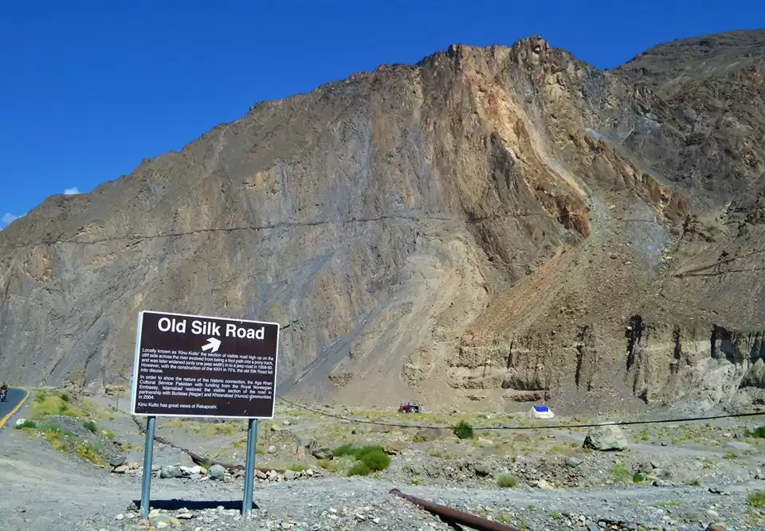

<div class="portfolio-single-load clearfix">
    <div class="custom-full-width-box">
        <div class="custom-container">
            <div class="custom-row align-items-center">
                <div class="custom-image-column">
                    
                </div>
                <div class="custom-text-column">
                    <h2 class="custom-heading">Remains of the Old Silk Road, Gilgit Baltistan</h2>
                    <p class="custom-paragraph">
                        Gilgit-Baltistan served as a crucial crossroads along the ancient Silk Road, facilitating trade and cultural exchange between East and West. Travelers can explore remnants of this historic trade route, including ancient caravanserais, Buddhist stupas, and rock carvings scattered throughout the region. These evocative relics offer glimpses into the region's rich cultural heritage and its pivotal role in shaping the history and development of civilizations along the Silk Road.
                    </p>
                </div>
            </div>
        </div>
    </div><!-- .custom-full-width-box end -->

</div><!-- end single-project -->
